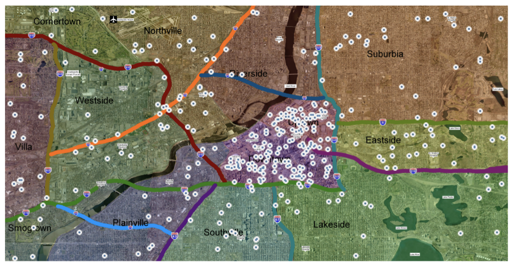
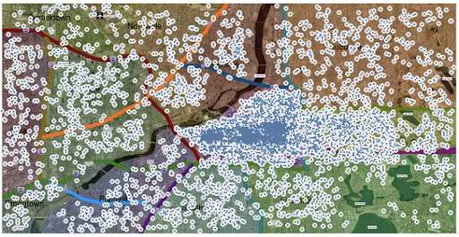
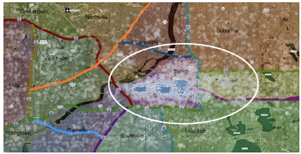
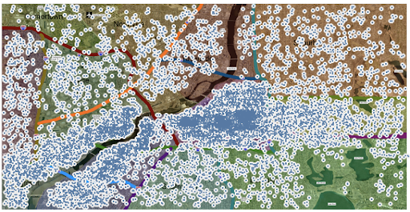
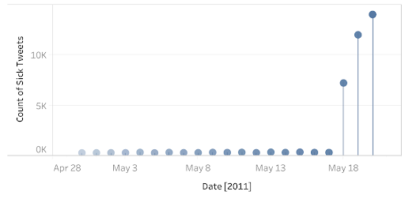

Matheus Bustamante & Emma Baker
Assignment 3
15 March 2021
CSE 557
1. Identify approximately where the outbreak started on the map (ground zero location). If possible, outline the affected area. Explain how you arrived at your conclusion. Please limit your response to no more than five images and 300 words.
Starting on the morning of May 18, clusters of sickness-related tweets emerge around the Uptown/Downtown and Plainville/Westside areas.
Figure 1. Sickness-related Tweets - May 17th
Figure 2. Sickness-related Tweets - May 18th
2. Present a hypothesis on how the infection is being transmitted. Identify the trends that support your hypothesis. Explain your reasoning, provide a supporting image and describe:
The sickness transmits both by water and by air. The wind speed increases in the days leading up to the outbreak. The wind is also blowing from the west. We can see in figure 3 an increase in the number of tweets in the Eastside area.
Figure 3. End of the day May 18th
The shape of clusters follows the waterway across the town
Figure 4. Sickness-related Tweets - May 19th
Residents of Vastopolis get their drinking water by pumping water from nearby reservoirs or rivers. It looks like the disease can spread by water as on the following day, May 19th, the number of tweets along the lower part of the vast river increases significantly. We don't see the same pattern around other lakes in the city. This might have to do with the fact that the disease started around the downtown area and in some way contaminated the water of the vast river. In figure 5 we see the map of sickness-related Tweets on May 20th. We can see some clustering around hospitals. Tweets in other areas of the map are mostly from people going back home to stay with their family. Since we don't see a significant increase of tweets in those areas, similar to along the river or downtown, we can conclude that the disease does not spread from person to person.
Figure 5. Sickness-related Tweets - May 20th
Is the outbreak contained?
No, the spread grows outwards of those two regions, and the number of sickness-related tweets increases.
Figure 6. Sickness-related Tweets Over Time
Is it necessary for emergency management personnel to deploy treatment resources outside the affected area?
Yes. In particular for the water supply along the vast river.
Process Notes:
Our dataset contains tweets with the following keywords: